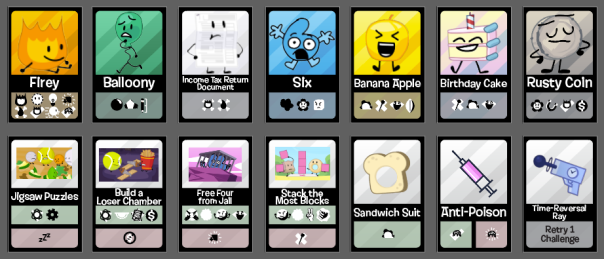
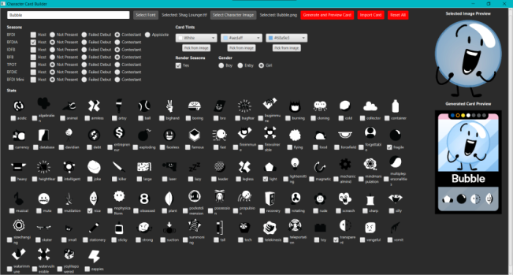

BFDI Cards is a playing card game that I've been designing based on BFDI with two game modes.
In the game you can both create your own fantasy BFDI seasons, or make them competitive by versing
opponents with your own team of contestants.
The fantasy season mode is akin to games like the Hunger Games Simulator, essentially acting as a
season generator.
The competitive mode is the opposite of a shedding card game like Uno, where you aim to be the last
player with cards in their hand.
I originally designed the cards in Illustrator, but I opted to speed up the process by coding my own
card creation program.
I import the cards into Tabletop Simulator, and may eventually print them like I did with
Last Card, my previous card game.
The game features contestant cards for every official contestant, algebralien, mini contestant,
speaker box, failed debuter, etc.
It also has challenge cards for every BFDI challenge, and item cards to add and remove stats from
contestants of your choice.

